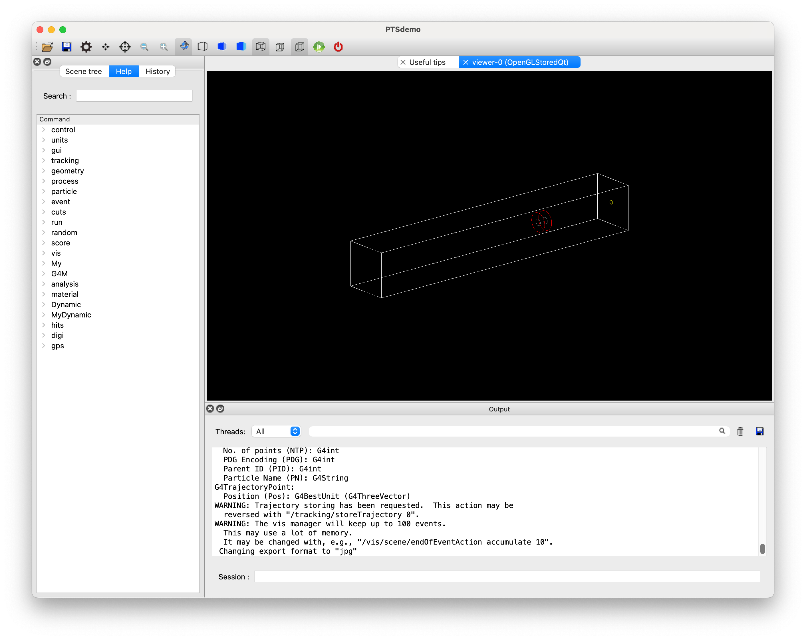

Example A4(GDMLビーム機器）
前章では、粒子線治療で用いられる機器のビームモジュールクラスを実体化しました。しかし、独自に機器を設計して配置したいときも出てきます。その場合には、G4BMGdmlクラスのビームモジュールを登録して、GDML, Geometry Description Markup Languageで記述したファイルをインポートしてビーム機器を作成することができます。
この例題では、シミュレーション空間にGDMLで記述した独自にビームモジュールを配置する方法を紹介します。
GDMLファイルの作成
GDMLビームモジュール登録と実体化
以下、PTSIMの実行ディレクトリ(例: ~/PTSproject-install/PTSapps/DynamicPort)で作業します。
例題マクロファイル
PTSIMコードに付属するマクロファイルexampleA4.macをコピーして用います。
$ cp ./macros/tut/exampleA4.mac .
実行
$ ./bin/PTSdemo -i exampleA4.mac

終了
Session: exit
マクロファイルの解説
解説するコマンド部分のみを抜粋して説明します。 この例題では、GDMLで記述したExtract(ビーム出口の円盤）とCollimator(穴の空いた円筒形）の場合で解説します。
1#
2# (PreInit State)
3/control/verbose 1
4#
5# Material
6/control/execute ./macros/common/materials.mac
7#
8# PhysicsList
9/control/execute ./macros/common/phys.mac
10#
11# System and module registration
12/G4M/System DynamicPort
13/Dynamic/Module/Room/register 525. 525. 3550. mm
14#
15/Dynamic/Module/gdml/schema ./data/schema/gdml.xsd
16/Dynamic/Module/register Extract G4MBMGdml ./data/Sample/G4MBMGdml/Extract.gdml 0. 0. 3500. mm
17/Dynamic/Module/register Collimator G4MBMGdml ./data/Sample/G4MBMGdml/Collimator.gdml 0. 0. 1500. mm
18#
19#
20# Run Initialize
21/run/initialize
22#
23# (PreInit State)
24#
25# Primary particle
26/My/PrimaryGenerator/select GPS
27/control/execute ./macros/common/gps.mac
28#
29# Beam-module installation
30/G4M/Module/install Extract
31/G4M/Module/install Collimator
32#
33#/run/beamOn 10
34#
ビーム機器の登録
使用するビーム機器をPreInit Stateで、/Dynamic/Module/registerコマンドにより登録します。
コマンドの引数は順番に、モジュールの固有名{mname}、モジュールタイプ{mtype}、パラメタファイル名{param}、配置座標と単位、回転角と単位です。
PreInit> /Dynamic/Module/register {mname} {mtype} {param} {x} {y} {z} {lunit} {rx} {ry} {rz} {runit}
配置座標や回転角は省略すると原点、回転なしになります。例題マクロでは、配置座標のみ与えています。
GDMLのビーム機器も用いる場合は、{mtype}はG4MBMGdmlとなります。そしてパラメタファイル{param}は、GDMLファイルになります。
GDMLスキーマ
GDMLのXMLタグを定義したファイルをスキーマと呼びます。GDMLファイルには、スキーマへのパスがGDMLファイルの保存場所からの相対パスで指定されて記載されています。前述のようにGDMLファイルが実行ディレクトリ意外にあるときは、スキーマファイルのパスを/Dynamic/Module/gdml/schema ./data/schema/gdml.xsdのように設定することを推奨します。
GDMLファイル
GDMLでのジオメトリ記述方法の詳細は、GDMLマニュアルを参照してください。
大まかには、次のセクションに分けられます。
パラメタ変数などを定義する
<define/>セクション物質を定義する`
セクション 形状を定義する
<solid>セクション全体の構造を定義する
<structure>セクション があります。
また、<structure>セクションの中に、
論理ボリュームを宣言する
<volume>セクション論理ボリューム内に子論理ボリュームを配置する
<physvol>セクション があります。
その他、位置座標を示す<position/>タグや回転を示す<rotation/>タグがあります。
最も簡単な例として、Extract.gdmlを示します。
:caption: Extract.gdml
<?xml version="1.0" encoding="UTF-8" standalone="no" ?>
<gdml xmlns:xsi="http://www.w3.org/2001/XMLSchema-instance" xsi:noNamespaceSchemaLocation="./data/schema/gdml.xs\
d">
<define/>
<materials/>
<solids>
<tube aunit="deg" deltaphi="360" lunit="mm" name="ExtractS1" rmax="50" rmin="0" startphi="0" z="0.1"/>
</solids>
<structure>
<volume name="ExtractL1">
<materialref ref="Titanium"/>
<solidref ref="ExtractS1"/>
<auxiliary auxtype="Color" auxvalue="#8080004c"/>
</volume>
</structure>
<setup name="Extract" version="1.0">
<world ref="ExtractL1"/>
</setup>
</gdml>
*PTSIMでは、モジュール毎にGDMLファイルを作成します。そのため、PTSIM独自ルールがあります。
原則的に物質は
/G4M/Material/createコマンドで作成しておいてください。 デフォルトではGDMLの<material/>セクションで定義されている物質はスキップして作成しません。Geant4のGDMLパーサは、GDMLファイル内で物質を定義しているかを確認します。PTSIMでは、物質を先に作成しておく方法を採用しているため、実行時に警告文がでますが警告は無視して構いません。登録時のモジュール名
{mname}とGDMLファイル内のの名称は同じにしてください。
*またGDML共通ですが、<solid name=...>, <volume name=...>, <physvol name=...>などのnameは、固有名となるようにしてください。複数同名のものがあるとXMLパーサは判断できなくなり、正しい構造が構築できなくなります。
ビーム機器の選択と配置条件の再設定
他のビーム機器と同様に扱えます。ビーム機器の配置座標や回転は、ビーム機器名を引数に/G4M/Module/selectコマンドで選択した後に、/G4M/Module/translateコマンド及び/G4M/Module/rotateコマンドで変更することができます。
ビーム機器の実体化
他のビーム機器と同様に扱えます。 設定したビーム機器を治療室に実体化して配置するには、ビーム機器名を引数に/G4M/Module/installコマンドを実行します。